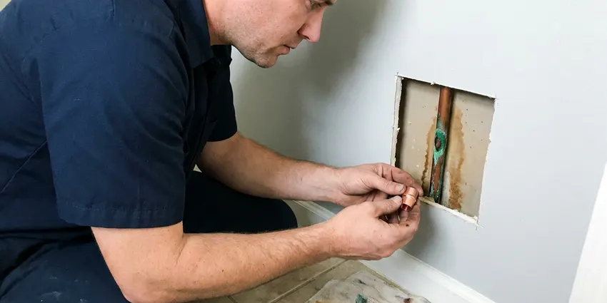

Well Pump Repair in Pflugerville, TX
DFJ Plumbing offers comprehensive well pump repair services across Pflugerville, TX, addressing everything from motor failures to pressure tank issues with precision.
- Fast Local Service
- Skilled Pump Technicians
- Transparent Pricing
- Guaranteed Work
Need Well Pump Repair Now in Pflugerville, TX?
Our team is ready to provide efficient and lasting repairs for your well pump system.
Professional Well Pump Repair Services in Pflugerville, TX
DFJ Plumbing specializes in all aspects of well pump repair, understanding that a malfunctioning well pump can bring your home's water supply to a halt. We quickly identify the root cause, whether it's electrical problems, pressure switch failures, or worn-out pump components.
Our expertise includes:
- Submersible and Jet Pump Repair
- Pressure Tank and Switch Diagnosis
- Control Box Troubleshooting

Additional Plumbing Repair Services in Pflugerville, TX
We offer expert plumbing repair services across Pflugerville, TX to fix leaks, restore flow, and keep your system running smoothly.


Customers
Why Choose DFJ Plumbing for Well Pump Repair in Pflugerville, TX?
Choosing DFJ Plumbing means you're getting a team that truly understands the complexities of well pump systems. We focus on durable repairs that stand up to the demands of Texas water usage.
- Local Expertise, DFJ Plumbing technicians are familiar with the specific well system challenges faced by homeowners in Pflugerville, TX.
- Advanced Tools, We use modern diagnostic equipment to accurately pinpoint well pump problems, saving you time and money.
- Quality Parts, Only high-grade, durable replacement parts are used for all well pump repairs, extending the life of your system.
Citywide Coverage
From the bustling center to the quiet outskirts, DFJ Plumbing provides comprehensive well pump repair coverage throughout Pflugerville. We understand the unique needs of different areas within the city and are prepared to address them efficiently.
Experienced Team
The DFJ Plumbing team brings years of specialized knowledge to every well pump repair job. Their expertise ensures that whether you have a deep well or a shallow well system, the repair is performed correctly and reliably.
Safety-First Approach
Safety is paramount in all well pump repair operations, especially when dealing with electrical components and high-pressure water systems. DFJ Plumbing adheres strictly to all local Pflugerville and state Texas plumbing codes to ensure safe and compliant repairs.
Trusted Certified Pflugerville Plumbing Services Professionals
At DFJ Plumbing, we take pride in providing certified plumbing services throughout Pflugerville, TX. Backed by leading industry credentials, our experienced plumbers combine technical skill with genuine customer care. Whether it is repair, installation, or maintenance, we follow strict safety and quality standards to deliver long-lasting results you can trust.
Call Us Now PHCC Plumbing Contractor Recognition
PHCC Plumbing Contractor Recognition Better Business Bureau (BBB) Accreditation
Better Business Bureau (BBB) Accreditation Angi Certified Pro
Angi Certified Pro ISO 9001 Quality Management Certification
ISO 9001 Quality Management CertificationDependable Well Pump Repair Services in Pflugerville, TX
Submersible Well Pump Repair in Pflugerville
Submersible pumps are common in Texas wells, designed to operate submerged within the well casing. When these pumps fail, symptoms often include no water, low water pressure, or strange noises from the well. Our technicians are skilled at diagnosing issues like motor burnout, damaged impellers, or faulty check valves that can affect submersible pump performance. We use specialized equipment for safe and efficient pump extraction and reinstallation, ensuring the integrity of your well system.

Jet Pump System Repair in Pflugerville, TX
Jet pumps, typically found above ground, use an ejector assembly to draw water from the well. Common problems include air leaks in the suction line, clogged nozzles, or a failing motor. These issues can lead to intermittent water flow or a pump that runs continuously without building pressure. DFJ Plumbing can effectively troubleshoot and repair these components, ensuring your jet pump system in Pflugerville operates at peak efficiency. We also check for proper priming, which is crucial for jet pump function.
Well Pump Pressure Tank Issues in Pflugerville
The pressure tank works in conjunction with your well pump to maintain consistent water pressure and reduce pump cycling. A waterlogged tank, a ruptured diaphragm, or a faulty air valve can cause rapid pump cycling, fluctuating water pressure, or even no water at all. Our team accurately diagnoses pressure tank problems and performs necessary repairs or replacements. We ensure your tank is properly sized and charged for optimal system performance in Pflugerville.
Well Pump Electrical Troubleshooting in Pflugerville, TX
Many well pump issues stem from electrical problems, including tripped circuit breakers, faulty wiring, or a malfunctioning control box. These can prevent the pump from starting or cause it to run erratically. Our licensed plumbers are also adept at electrical diagnostics, safely testing circuits, relays, and capacitors to identify and repair electrical faults. We ensure all wiring and connections meet Texas electrical codes, providing a safe and reliable power supply to your well pump.
Emergency Well Pump Repair in Pflugerville
When your well pump suddenly stops working, you need immediate help. DFJ Plumbing offers emergency well pump repair services in Pflugerville to restore your water supply as quickly as possible. We understand the urgency of having no water and prioritize these calls, sending out skilled technicians equipped to handle critical pump failures. Our goal is to minimize your downtime and get your household back to normal operations without delay.
Well Pump Brands We Service in Pflugerville, TX
DFJ Plumbing has extensive experience repairing well pumps from all major manufacturers, including Goulds, Grundfos, Franklin Electric, and Myers. Our technicians are familiar with the specific design and troubleshooting procedures for various models. Whether your pump is an older unit or a newer variable speed drive system, we have the expertise and access to quality parts needed for a reliable repair in Pflugerville. We aim to extend the life of your existing well pump system.
Diagnosing Low Water Pressure in Pflugerville
Low water pressure from a well system can be a frustrating problem, often indicating issues beyond just the pump itself. This could be due to a failing pressure switch, a partially clogged well screen, a leak in the supply line, or even a pump that is no longer meeting demand. Our team conducts thorough diagnostics to pinpoint the exact cause of low pressure in your Pflugerville home, ensuring a targeted and effective repair solution.

Well Pump Maintenance & Repair Cost Comparison in Pflugerville, TX
Investing in regular well pump maintenance can often prevent costly emergency repairs. While an average well pump repair in Pflugerville might range from $400 to $1,500 depending on the complexity and parts needed, preventative checks are typically much less. DFJ Plumbing provides clear, upfront pricing for both repair and maintenance services, helping you make informed decisions to optimize your well system's longevity and performance against the Texas climate and water demands.
Trusted Well Pump Repair Near Me in Pflugerville, TX
When you search for 'well pump repair near me' in Pflugerville, TX, DFJ Plumbing is your reliable local choice. We pride ourselves on quick response times and efficient service, understanding that a functioning well pump is vital for homes that rely on well water. Our technicians are always ready to address your well pump issues promptly and professionally.
Our commitment to the Pflugerville community means we're always close by, providing expert well pump repair services right to your doorstep. We are deeply familiar with the local water systems and common issues that affect well pumps in this area. You can count on DFJ Plumbing for dependable, local plumbing expertise.
DFJ Plumbing at a Glance
- Licensed and insured plumbers serving Pflugerville, TX
- Same-day appointments and 24/7 emergency response
- Clear written estimates, no hidden fees
- 4.9-star rated by 812+ Texas customers
Pflugerville Map
Pflugerville Information
- Population
- 65,301
- Area codes
- 512/737/830
- Service area
- Pflugerville and communities within 40 miles
- Nearby
- Round Rock, Cedar Park, Austin, Georgetown
Ensuring your well pump is in top condition is crucial for homes in Pflugerville, TX that rely on private well systems, especially given the fluctuating water tables and varied soil conditions typical of Texas.
Expert Services
Trust our professionals for reliable DFJ Plumbing solutions in Pflugerville, TX.
Our Specialized Plumbing Services in Pflugerville, TX
At DFJ Plumbing, we provide a complete range of plumbing services across Pflugerville, TX. From leak detection to full system installations, our team ensures fast, precise, and affordable service for both residential and commercial properties. Explore our core services below:


How Our Well Pump Repair Process Works in Pflugerville, TX
Our straightforward well pump repair process is designed to get your water flowing again with minimal hassle.
Request a Quote
Contact DFJ Plumbing at (737) 405-5978 to describe your well pump issue. We'll gather necessary information and schedule a convenient service appointment for you.
Diagnosis & Estimate
Our skilled technician will arrive on time to thoroughly inspect your well pump system, identify the problem, and provide a clear, upfront estimate before any work begins.
Expert Repair
Upon your approval, we'll proceed with the repair using quality parts and proven techniques. We ensure your well pump is restored to optimal working condition efficiently.
Frequently Asked Questions About Well Pump Repair in Pflugerville
The cost of well pump repair in Pflugerville can vary widely, typically ranging from $400 for minor electrical fixes to $2,500 or more for complex issues like replacing a submerged pump motor. Factors include the type of pump, the depth of the well, and the specific parts needed. We provide transparent, upfront pricing after a thorough diagnosis.
Well pump repair involves complex electrical components, high-pressure water systems, and often heavy equipment for pulling pumps from wells. DIY repair is generally not recommended due to safety risks and the potential for further damage. It's best left to experienced professionals to ensure a correct and safe repair.
The duration of a well pump repair depends on the issue. Simple fixes like a pressure switch replacement might take a few hours, while replacing a submersible pump can take a full day, especially if the well is deep. We strive for efficient service to restore your water as quickly as possible.
For most standard well pump repairs, a permit is typically not required in Pflugerville, TX. However, for major replacements or new installations, permits may be necessary to ensure compliance with local plumbing and electrical codes. We will advise you if a permit is needed for your specific situation.
Well pump failures can be caused by various factors such as electrical problems (e.g., power surges, faulty wiring), mechanical wear and tear on pump components, sediment buildup in the well, or issues with the pressure tank or switch. Age and consistent use also play a role.
Regular maintenance is key. This includes annual inspections, checking the pressure tank's air charge, ensuring proper well cap sealing, and being mindful of your water usage. Avoiding continuous short cycling of the pump can also extend its life.
DFJ Plumbing services all major well pump brands, including but not limited to Goulds, Grundfos, Franklin Electric, Myers, and Sta-Rite. Our technicians are trained and equipped to work on a wide variety of models and system types.
Yes, DFJ Plumbing stands behind its work. We offer warranties on both parts and labor for our well pump repairs. Specific warranty details will be provided with your estimate, ensuring you have peace of mind about the longevity of our service.
What People Are Saying About Our Plumbing Experts?

Sofia M.
Two new toilets installed in one visit, no mess left behind, and the tech even adjusted a faucet he noticed was dripping. Fair pricing and really friendly.
Toilet Installation · Austin, TX
Robert G.
The trenchless sewer replacement saved our front yard. They walked us through the camera inspection footage first so we knew exactly what we were paying for.
Sewer Line Replacement · Cedar Park, TX
Patricia H.
We had a slab leak that two other companies could not find. DFJ Plumbing located it in under an hour, explained our options, and the price matched the quote to the dollar.
Slab Leak Repair · Leander, TX
Mark T.
When our office needed drain cleaning, DFJ Plumbing provided quick, reliable service. The plumber arrived on time and made sure every drain flowed perfectly before leaving. Very satisfied.
Drain Cleaning · Kyle, TX
Daniel K.
A pipe burst at 11 pm and they actually answered. The plumber showed up within the hour, shut everything down, and had us back to normal the next morning. Could not ask for more.
Emergency Plumbing · Round Rock, TXJames P.
Our commercial plumbing system had a leak under the sink, and DFJ Plumbing handled it professionally. The plumbers arrived quickly and restored everything without disruption to our customers.
Commercial Plumbing · Austin, TX